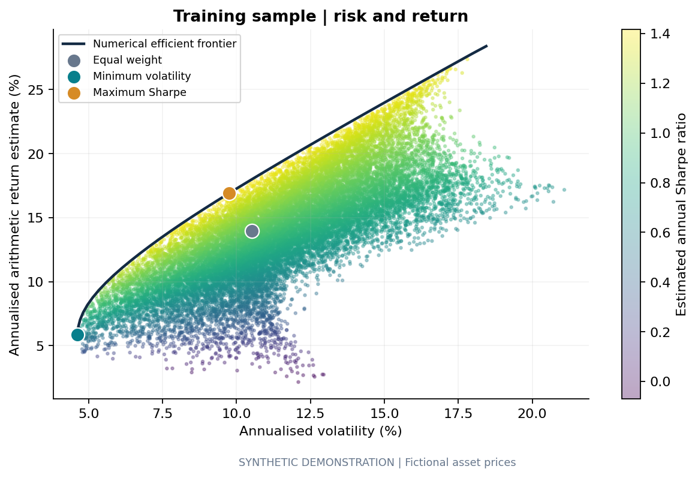
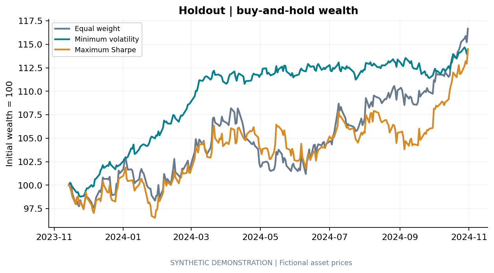
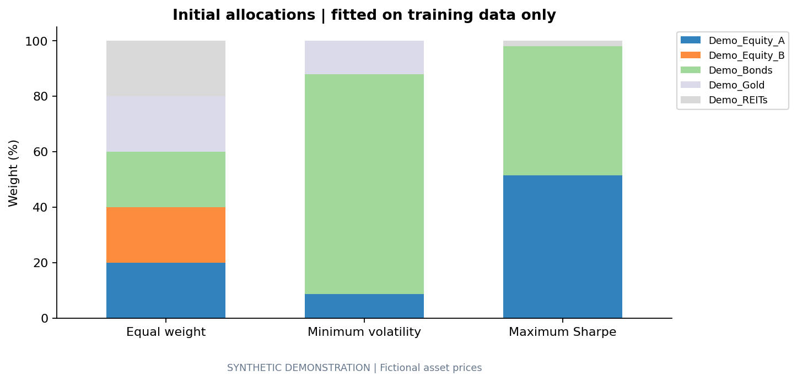
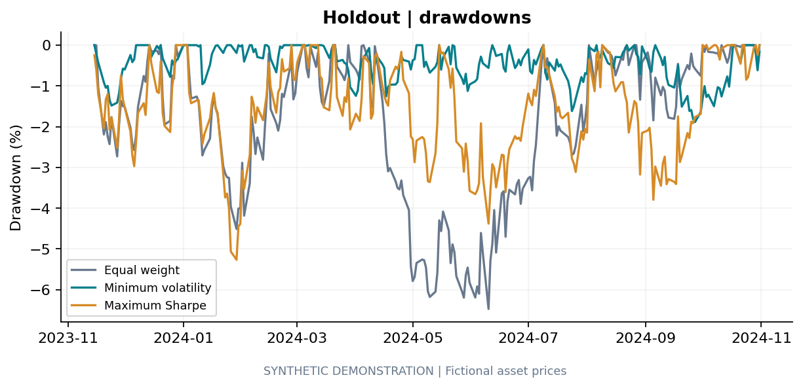
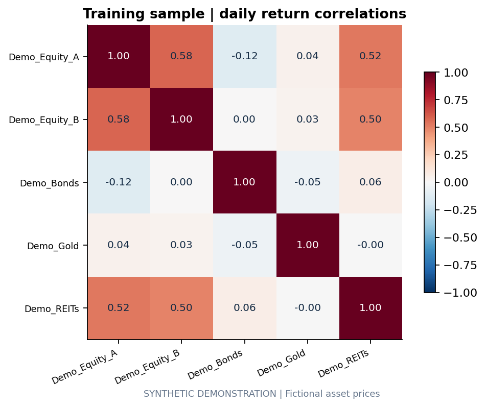

Optimise in-sample. Judge out-of-sample.
Five fictional assets, 20,000 long-only sampled allocations and a 40-point efficient frontier. Portfolio weights are fitted on 1,008 training returns and evaluated unchanged on a later 252-return holdout.
Synthetic demonstration only. These results are designed to test the workflow and are not historical performance, forecasts or investment advice.
Training opportunity set

Holdout performance
| Portfolio | Total return | Annual vol. | Sharpe | Max drawdown |
|---|---|---|---|---|
| Equal weight | 16.67% | 10.40% | 1.25 | -6.48% |
| Minimum volatility | 14.48% | 4.93% | 2.17 | -1.89% |
| Maximum Sharpe | 14.47% | 10.60% | 1.05 | -5.27% |

Allocations

Drawdowns

Asset relationships

Interpretation
The portfolio labelled “Maximum Sharpe” is selected using the training sample; its lower realised holdout Sharpe illustrates why in-sample optimisation should not be treated as proof of future superiority. The minimum-volatility allocation happened to deliver the strongest holdout Sharpe on this particular synthetic path, which motivates the repeated-path robustness analysis.